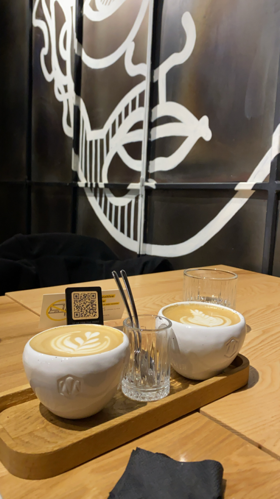

29 septembrie 2024
Meron
💜 Te iubesc pentru maturitatea ta ascunsa intr-un suflet inocent. 💜
Poate este o părere subiectiva, dar pana în adancul conștiinței mele consider ca avem o relație frumoasă. Mai mult decât atât, persoanele din exterior cred ca
avem o relație ideală. Daca cineva s-ar uita la aceasta poza ar vedea doar 2 cafele. Totuși doar noi știm furtuna emoțională care a fost în spatele acestei poze.
Am fi putut sa ne despărțim în multe momente, Ioana. Insa amândoi am ales conștient cea mai buna varianta, dar nu și cea mai ușoară. Am ales sa ne asumam
problemele din relația noastră și sa trecem peste ele. Împreună pana la capat. Ce e mai frumos decât asta?